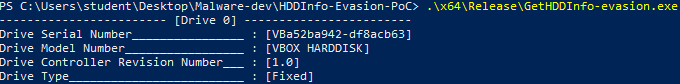

HDD Info Evasion
Updated: February 17, 2024
Unveiling an Evasive Technique: Exploring SMART_RCV_DRIVE_DATA
Welcome to my blog! In this post, I'll share a recently discovered evasive technique encountered during the analysis of a malware sample. Evasive malware research is a focal point of my work, and this particular technique involves leveraging the DeviceIoControl and IOCTL SMART_RCV_DRIVE_DATA to gather information about physical disks. While numerous evasive techniques exist, aiming to expose artifacts related to virtualized environments based on hardware information, this specific technique has not been widely documented, or at least not utilized as an evasive technique. Let's delve into the details of this evasive approach.
Understanding Evasive Malware
Malware analysis typically occurs in virtualized environments such as VirtualBox or VMWare to prevent infections. However, these environments introduce specific characteristics, known as artifacts, detectable by applications using particular Windows APIs or assembly instructions. Evasive malware seeks to identify these artifacts and, upon detection, may alter its behavior to perform benign actions or cease execution to thwart analysis. The problem introduced by evasive malware is that they can pose challenges for malware analysts, making the analysis process more time-consuming or even almost impossible to be accomplished. Additionally, there is a category of evasive malware known as Targeted malware, specifically designed to infect a particular environment, making them harder to analyze due to their focus on specific artifacts. As a reference, Check Point Research and Unprotect Project are excellent resources for studying evasive techniques.
Harnessing HDD Information for Evasive Queries
Virtual environments leave distinctive traces that can be queried to unveil their presence. While various techniques exist, the one discussed here is a variation, offering a new tool for evasive malware to determine if it is operating in an undesirable environment. This query utilizes DeviceIoControl with the SMART_RCV_DRIVE_DATA control code, which returns ATA-2 identify data, SMART thresholds, or SMART attributes for the device. We will focus on extracting the Serial and Model numbers, crucial indicators of the environment, from this data. The inspiration for this technique came during the analysis of a specific malware (MD5: d1fc79af1c2da55095fe41b31e213778), where the physical drive was queried using also IOCTL SMART_GET_VERSION and other IOCTLs apart from the one used in the current Proof of Concept (PoC). Although the malware did not utilize this information for evasive purposes, it sparked the development of a PoC to explore and contribute to the research on this technique.
Technical Details
Similar to other evasive techniques based on IOCTL and DeviceIoControl, the first step is obtaining a handle to the device using CreateFile.
HANDLE hDrive = CreateFileA("\\\\.\\PhysicalDrive0", GENERIC_READ | GENERIC_WRITE, FILE_SHARE_READ, 0, OPEN_EXISTING, 0, 0);
The device represents the entire disk and points to "\Device\HarddiskX\Partition0", more information about physical disk here.
Before calling DeviceIoControl, we need to set up the input parameters as specified in the SMART_RCV_DRIVE_DATA documentation.
The input parameters, of type SENDCMDINPARAMS, require specific initialization.
According to the documentation, it's essential to set the irDriveRegs.bCommandReg member to ID_CMD for retrieving identify data.
Additionally, the lengths for input and output buffers must be specified as (sizeof(SENDCMDINPARAMS) - 1) and (sizeof(SENDCMDOUTPARAMS) - 1 + 512), respectively.
The output parameters, of type SENDCMDOUTPARAMS, will contain the drive data.
Full details on the structure can be found in my header file.
The resulting values, including the serial number and model number, can be retrieved by iterating over specific portions of the obtained buffer.
for (index = iFirstIndex; index <= iLastIndex; index++)
Executing this program in a VirtualBox environment, the resulting values for the serial number, model number, drive controller revision number, and drive type provide valuable information for evasive malware seeking to detect virtualized environments.
{
// Get high byte for 1st character
pcszBuf[position++] = (char)(diskData[index] / 256); // / 256 = >> 8
// Get low byte for 2nd character
pcszBuf[position++] = (char)(diskData[index] % 256); // ^ 256 = & 0xFF
}

Conclusion
In unraveling the intricacies of evasive malware, this exploration of the SMART_RCV_DRIVE_DATA technique sheds light on a previously undocumented avenue for detecting virtualized environments. The ability to extract crucial information such as Serial and Model numbers from physical disks can serve as a powerful tool for malware looking to evade analysis in virtualized settings. As we continue to uncover new evasive techniques, it becomes evident that the cat-and-mouse game between malware developers and analysts persists. Adapting and evolving our understanding of these techniques is crucial for staying ahead in the realm of malware analysis.
If you're interested in diving deeper into the technical details or exploring the Proof of Concept (PoC) code, you can find the code on my Github page.
You are welcome to contribute, offer feedback, or leverage the code as a foundation for your research. However, please bear in mind that this code is intended solely for demonstration and research purposes. Any use of the code is your responsibility.
Thank you for taking the time to read this! Hope you enjoyed it 👻